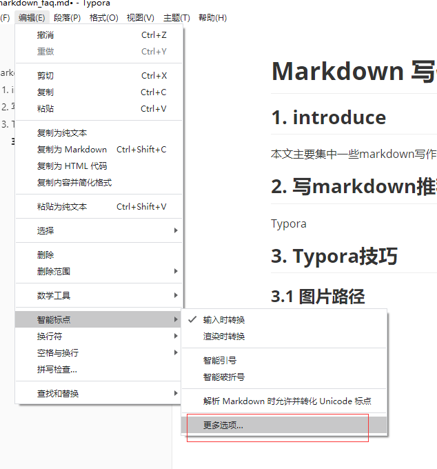
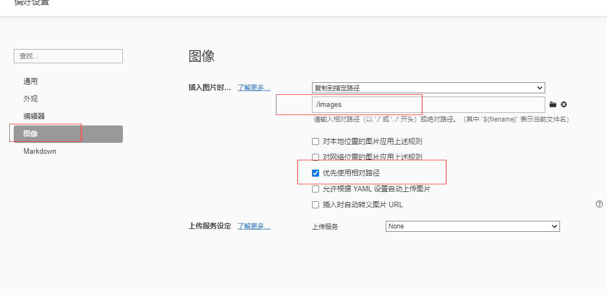
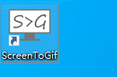
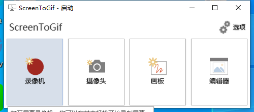
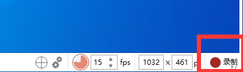
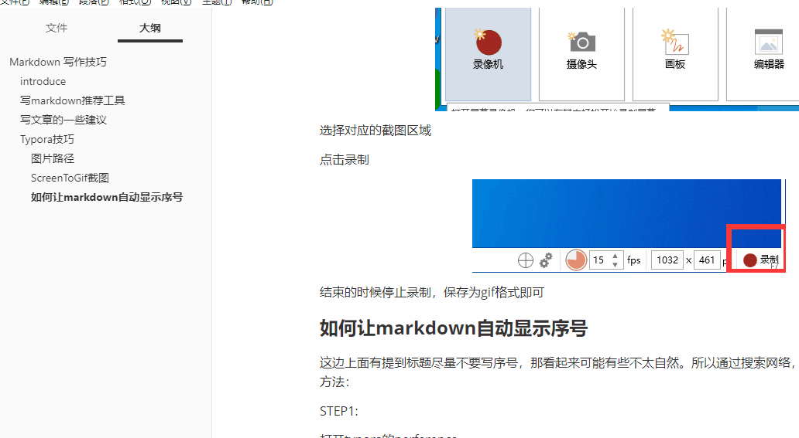
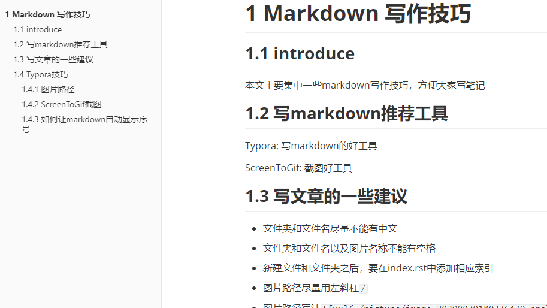

3. Markdown 写作技巧
3.1. introduce
本文主要集中一些markdown写作技巧，方便大家写笔记
3.2. 写markdown推荐工具
Typora: 写markdown的好工具
ScreenToGif: 截图好工具
3.3. 写文章的一些建议
文件夹和文件名尽量不能有中文
文件夹和文件名以及图片名称不能有空格
新建文件和文件夹之后，要在index.rst中添加相应索引
图片路径尽量用左斜杠
/图片路径写法
(xx会显示在网页上面)一级标题在网页中会作为文件名来显示，请不要将一级标题放到markdown中的章节来使用，markdown里面章节用二级标题，其余顺延
标题之间请不要添加序号例如
1. （一）该wiki网页会自动生成序号，两个会重叠。而且加入序号之后不利于增删章节，可以通过查看大纲的方式来进行编排，大纲中可以清楚的看到一级标题还是二级标题图片为了美观尽量放到一个文件夹中，方便管理，存储的时候可以参考下面图片路径章节。
在截图的时候，稍微注意下图片的大小，通常建议图片大小在100KB以内即可，如果太大了，建议压缩一下再放上去，因为图片越多会导致git目录下面的文件会越来越多，别人下载的时候会需要很久。所以如果有时间的话，图片尽量少一些，可以采用gif图片的方式将几张图片折叠到一起。
一篇单独的文章尽量将图片和markdown放到一个文件夹里面，这样方便管理者移动文章，因为有些文章路径只是暂时的。而且也方便作者将文章发表到其他的平台上，比如CSDN，获取一些流量。切记发自己写的文章。
尽量不要放markdown文档没用到的文件，因为携带不方便，可以用网盘的方式来进行存放。
文章尽量少图片，一些可能没什么作用的中间图片尽量少的引用。
再强调一下，一篇文章图片和markdown尽量放一个文件夹内，尽量分的开一些。
3.4. Typora技巧
3.4.1. 图片路径
图片路径建议放到本地，
配置如下，打开配置路径

修改配置如下：

其他人可以根据自己的喜好配置
3.4.2. ScreenToGif截图
打开工具

点击录像机

选择对应的截图区域
点击录制

结束的时候停止录制，保存为gif格式即可
3.4.3. 如何让markdown自动显示序号
这边上面有提到标题尽量不要写序号，那看起来可能有些不太自然。所以通过搜索网络，提供一种看起来有标号的方法：
STEP1:
打开typora的perference,打开theme 文件夹

STEP2:
创建一个名为base.user.css的文件
STEP3:
添加内容如下：
.sidebar-content {
counter-reset: h1
}
.outline-h1 {
counter-reset: h2
}
.outline-h2 {
counter-reset: h3
}
.outline-h3 {
counter-reset: h4
}
.outline-h4 {
counter-reset: h5
}
.outline-h5 {
counter-reset: h6
}
.outline-h1>.outline-item>.outline-label:before {
counter-increment: h1;
content: " "
}
.outline-h2>.outline-item>.outline-label:before {
counter-increment: h2;
content: counter(h2) " "
}
.outline-h3>.outline-item>.outline-label:before {
counter-increment: h3;
content: counter(h2) "." counter(h3) " "
}
.outline-h4>.outline-item>.outline-label:before {
counter-increment: h4;
content: counter(h2) "." counter(h3) "." counter(h4) " "
}
.outline-h5>.outline-item>.outline-label:before {
counter-increment: h5;
content: counter(h2) "." counter(h3) "." counter(h4) "." counter(h5) " "
}
.outline-h6>.outline-item>.outline-label:before {
counter-increment: h6;
content: counter(h2) "." counter(h3) "." counter(h4) "." counter(h5) "." counter(h6) " "
}
/** initialize css counter */
#write {
counter-reset: h1
}
h1 {
counter-reset: h2
}
h2 {
counter-reset: h3
}
h3 {
counter-reset: h4
}
h4 {
counter-reset: h5
}
h5 {
counter-reset: h6
}
/** put counter result into headings */
#write h1:before {
counter-increment: h1;
content: " "
}#write h2:before {
counter-increment: h2;
content: counter(h2) " "
}
#write h3:before,
h3.md-focus.md-heading:before /** override the default style for focused headings */ {
counter-increment: h3;
content: counter(h2) "." counter(h3) " "
}
#write h4:before,
h4.md-focus.md-heading:before {
counter-increment: h4;
content: counter(h2) "." counter(h3) "." counter(h4) " "
}
#write h5:before,
h5.md-focus.md-heading:before {
counter-increment: h5;
content: counter(h2) "." counter(h3) "." counter(h4) "." counter(h5) " "
}
#write h6:before,
h6.md-focus.md-heading:before {
counter-increment: h6;
content: counter(h2) "." counter(h3) "." counter(h4) "." counter(h5) "." counter(h6) " "
}
/** override the default style for focused headings */
#write>h3.md-focus:before,
#write>h4.md-focus:before,
#write>h5.md-focus:before,
#write>h6.md-focus:before,
h3.md-focus:before,
h4.md-focus:before,
h5.md-focus:before,
h6.md-focus:before {
color: inherit;
border: inherit;
border-radius: inherit;
position: inherit;
left:initial;
float: none;
top:initial;
font-size: inherit;
padding-left: inherit;
padding-right: inherit;
vertical-align: inherit;
font-weight: inherit;
line-height: inherit;
}
这个时候重启typora就可以看到标题了，并且源代码里面是没有标题的，生成pdf是可以有标题的。

3.4.4. 如何让markdown支持gitee图床
说明下：参考一，我这边测试也成功了，但是有时会失败，参考二，测试感觉比较靠谱
我们在本地，使用typora编写markdown文档时，贴在markdown中的图片，默认都是存放在本地，这其实给我们挺多麻烦的，例如我们想把写的笔记上传到一些网络平台，例如知乎、csdn、公众号，WIKI等。
这些本地路径复制上来，肯定是显示不出来的，这个时候，我们就需要了解一下图床了：
图床一般是指储存图片的服务器，有国内和国外之分。国外的图床由于有空间距离等因素决定访问速度很慢影响图片显示速度。
国内也分为单线空间、多线空间和cdn加速三种。
下面我就给大家演示一下，如何让自己的typora配置上gitee的图床。
PicGo安装与配置
PicGo简单点说就是一个图床上传工具，我们主要就是借助这个软件进行上传
这一点非常重要！
下载地址给大家：
https://github.com/Molunerfinn/PicGo/releases/tag/v2.3.0-beta.4

安装完成PicGo后，需要搜索gitee 上传插件，这里最好选择gitee-uploader 1.1.2，感觉稳定性更好些

gitee上创建存放图片的公开仓库
这个创建仓库的方式，不仔细说了，注意点就是，一定得是公开的仓库，比如创建了article-images仓库

生成gitee私人令牌
找到设置项

找到私人令牌

编辑私人令牌，点击提交后，会显示私人令牌，由于只显示一次，请注意保存

PicGo图片上传到Gitee配置
点击图床设置，选择gitee，进行如下配置


验证PicGo配置可以正确上传图片
虽然复制一张图片，点击上传，如果有如下提示，则表示成功

设置Typora

注意事项
在使用过程中，如果出现贴图尺寸大于1M，那么无法从gitee中自动下载下来，显示在本地
如果出现之前成功上传，但用着用着就上传失败时，可以重启PicGo软件试一下，应该就可以正常上传了